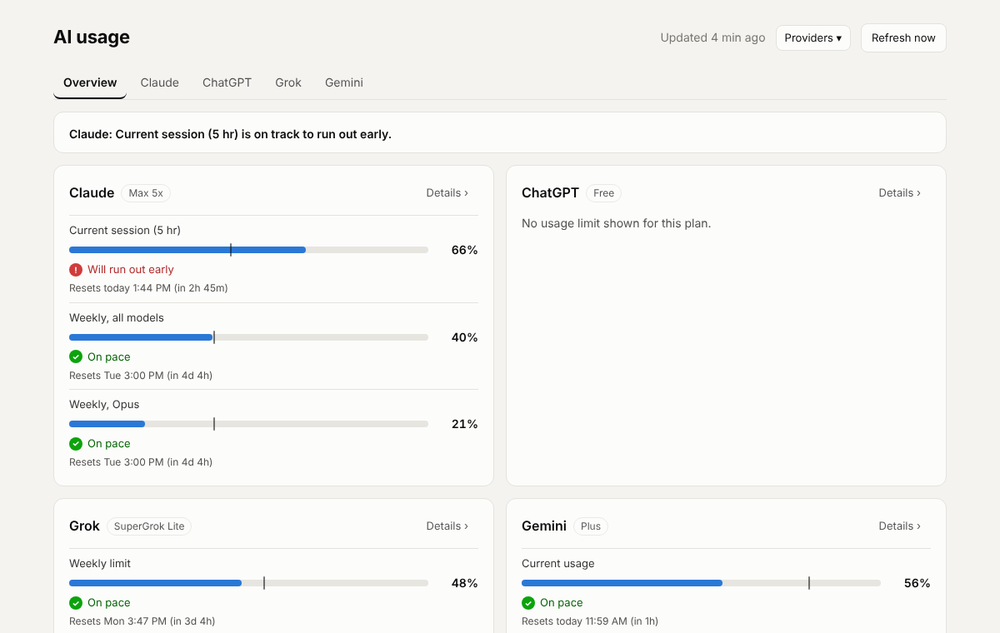
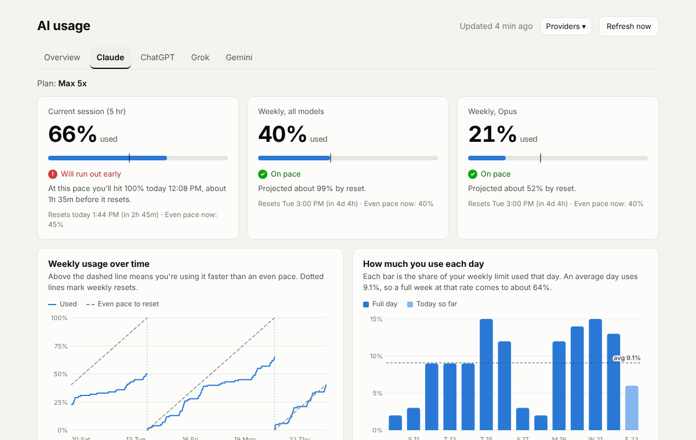

See whether you will hit your AI limit before it resets.
A Chrome extension that reads your Claude, ChatGPT, Grok and Gemini usage on a schedule, keeps the history, and projects where you will land at reset, so a limit does not stop you in the middle of a piece of work.
Each provider only shows a number right now. The tracker compares how much you have used with how much of the window has passed, then carries your average pace forward to the reset.
Even paceYour usage so farProjected at your average
What it does
Predicts a run-out
For every limit it labels your pace and, when a run-out is coming, estimates roughly when you would reach 100%.
Every provider in one place
The toolbar badge shows the most urgent limit across everything you track. Hover it for each provider's worst limit.
Keeps your history
The dashboard turns readings into trends: usage against an even-pace line, usage by day and by hour, and a plan check.
Alerts you
Notifications at 75% and 90% of a weekly limit, 90% of a session, and when your pace says you will run out early.
Exports your data
Download CSV or JSON, which is handy as evidence when you are deciding whether to upgrade a plan.
Syncs to your own database
Optionally copy readings to a Supabase project you control for history across computers and your own queries.
Providers
Each provider is opt-in. Turning one on asks Chrome for permission to read that site, and turning it off removes the permission. Nothing is read until you choose. You need to be signed in to each tool in the same Chrome profile.
Provider
How it is read
What you see
Interval
Claude
The same usage numbers the Settings, Usage page uses, requested from your signed-in claude.ai session
5 hour session, weekly all models, and per-model weekly limits
15 minutes
ChatGPT
The text of the usage page, read in a background tab
Monthly limit on free plans, or 5 hour and weekly limits where the plan has them
1 hour
Grok
The Usage panel, read in a background tab
One weekly limit with a Voice and Chat split and any extra credits
1 hour
Gemini
The usage page, read in a background tab
A current-usage meter and a weekly limit
1 hour
How the prediction works
The extension knows when each window resets and how long it is, so it knows how far through the window you are. Pace is the share of the window that has passed. The projection takes your average burn rate in the current window and carries it to the reset. The result gets one of four labels.
On paceThe projection is comfortably under the limit.
Ahead of paceYou are using more than an even share but have room.
Cutting it closeThe projection lands right around 100%.
Will run out earlyThe projection clearly lands over the limit.
This is a straight line from your average. A heavy burst early in a window makes it pessimistic and a quiet stretch makes it optimistic, so treat it as a guide. Long windows such as a monthly limit get no projection for their first three days, because there is not enough history yet.
The dashboard
With two or more providers on, the dashboard opens on an Overview with a one-line verdict and a card per provider. Each provider also has its own tab with limit cards, a 14 day trend, daily and hourly usage, and a plan check that says whether your plan fits, is running tight, or is more than you need. The charts become useful after a day or two of readings and the plan check after about a week.

Overview tab with a card per provider.

A provider tab with limit cards, trend charts and the plan check.
To preview everything before you have readings, click Preview with sample data, or open dashboard.html?demo=1 from the extension.
Install
The extension is not in the Chrome Web Store yet, so you load it in Developer mode. There is no build step and no dependencies.
Download the ZIP and unzip it, or clone the repository.
Open chrome://extensions in Chrome and turn on Developer mode in the top right corner.
Click Load unpacked and select the folder that contains manifest.json. If Chrome says the manifest is missing, you picked a folder one level too high.
Click the puzzle piece icon in the toolbar and pin AI Usage Tracker.
A dashboard tab opens the first time. Choose your providers, allow the permission Chrome asks for, make sure you are signed in, then press Refresh to take your first reading.
Keep the folder where it is after installing, because Chrome runs the extension from it. To update, replace the files and click the reload arrow on the extension's card. It works in Chrome and other Chromium browsers that support Manifest V3, such as Edge, Brave and Arc.
Privacy and permissions
By default everything stays in your browser. Readings are saved in the extension's local storage in your Chrome profile and about 120 days of history are kept. Checking Claude usage does not use any of your allowance, since it is the same small request your browser makes when you open the Usage page. For the other providers the extension opens the usage page in a background tab, reads the text, and closes the tab.
Read usage for each provider. All optional, requested only when you turn a provider on.
*.supabase.co
Send readings to your Supabase project, only if cloud sync is on
storage
Save your reading history locally
alarms
Take readings on a schedule
notifications
Send usage alerts
tabs, scripting
Read usage pages in a background tab, and fall back to an open claude.ai tab if a direct request is blocked
Optional cloud sync with Supabase
Sync gives you history across computers and a database you can query. It also lets Claude answer questions like "how is my usage this week?" in any chat that has your Supabase connected. Run supabase/schema.sql in your project's SQL editor, add yourself as a device to get an ingest token, build a sync code from your project URL, publishable key, token and a name, then paste it under Cloud sync on the dashboard. The README has the exact commands. Treat the sync code like a password and never commit it.
Known limitations and fixes
What to know before you rely on it
None of these are official usage APIs. Claude's endpoint is what its own Settings page uses, and the other providers are read from page text, so any of them can change without notice.
It is not in the Chrome Web Store, so it does not update automatically.
Readings are only taken while Chrome is open and you are signed in to the tracked site.
Usage cannot be broken down by app. Claude usage from the web, desktop, mobile and Claude Code all appear together.
Layouts for plans the author has not had access to, such as paid ChatGPT plans, are untested.
Troubleshooting
Manifest file is missing or unreadable: select the folder that directly contains manifest.json.
Not signed in: sign in to that site in the same Chrome profile, then press Refresh.
Claude readings fail with an HTTP error: open a claude.ai tab and press Refresh. The extension can read through an open tab.
Could not find the usage meters: the provider changed its page. Open an issue and say which provider and what you see.
Badge shows !: the last reading failed. Open the popup to see why.
Roadmap
Estimating ordinary ChatGPT chat usage from message counts
More providers
A team view for admins using the official Anthropic and OpenAI usage APIs